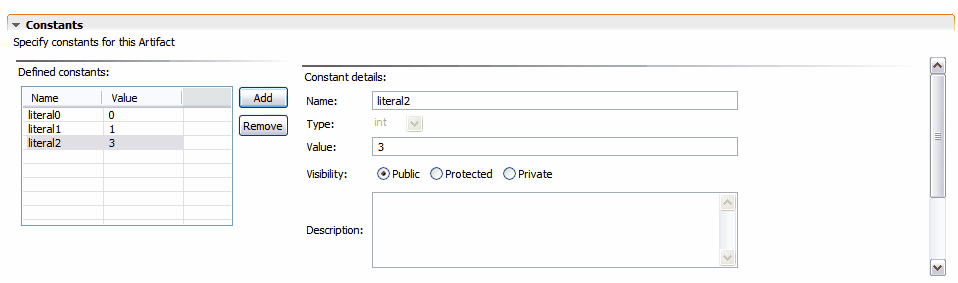

Artifact Literals
To edit Artifact literals, expand the Literals section in the Tigerstripe Artifact editor. The Literals section is shown below:

Note :Not all Artifact Types support Literals.
To add a literal:
- Click Add. a sample literal is created and the detailed information for the literal displays in the Artifact editor.
To remove a literal:
- Select the literal from the list of defined literal.
- Click Remove. A confirmation dialog appears to confirm the removal of the selected literal.
To edit a literal:
- Select the literal from the list of defined literals.
The detailed view for the selected literal displays. You can edit the following information:
- Name: This is the name of the literal. This must be a valid identifier and cannot contain spaces or special characters. This identifier must be unique within the context of the Artifact.
- Description: a textual description of the literal. This field documents the purpose of the constant. You can use HTML in the field as it will be propagated into the web site where the project is to be published, as well as in the generated code. For more details on Artifact documentation, refer to Tigerstripe Model Documentation.
- Visibility: defines the visibility of the literal.
- Value: The value for the literal. If the selected type for the literal is String, the given value must be surrounded by quotes (").
- Type: The type of literal. Valid literal types are String and int. Note: In the case of an enumeration artifact, the literal type is determined by the base type of the enumeration. The base type can be set through the Details tab of the Tigerstripe Enumeration Artifact editor.
- Stereotypes: Stereotypes that have a scope of "Literal" can be applied to the literal. For more info see the section on Stereotypes.
To reorder literals:
- Select the literal from the list of literals. Use the Up and Down buttons to place the literal in the required position in the list of literals. Clicking on the heading of the table will sort the list alphabetically, clicking it again will sort the list in reverse alphabetical order. Note that not all generators will necessarily use the order in a particular manner.
Related Topics
Creating Artifacts
Editing Artifacts
Artifact Attributes
Artifact Methods
© copyright 2005, 2006, 2007 Cisco Systems, Inc. - All rights reserved